ADS-B
Every second, aircraft broadcast their position, altitude, speed and callsign on 1090 MHz. This page receives them and draws a radar picture, then lays the chart over it: not just "an aircraft up there", but which arrival it is flying, which runway it is lined up for, and which gate it taxis to afterwards.
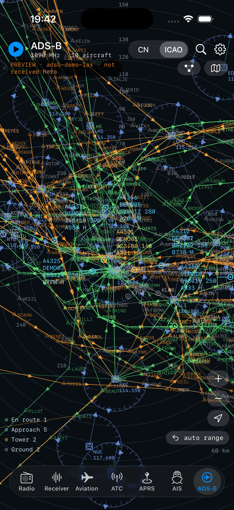
About the pictures. This page uses Los Angeles International (LAX), with the chart from the example data file. The aircraft are demonstration data and the callsigns DEMO01–DEMO10 are invented, which is why a PREVIEW line shows at the top left; it is not there when you receive for yourself.
Starting
- Use a suitable antenna1090 MHz is a short wavelength and a broadcast whip does poorly. Shorten each element to about 6.5 cm, stand it upright by a window, or use an antenna made for 1090 MHz. The more sky it sees, the more aircraft you get.
- Tap play at the top leftThe receiver tunes to 1090 MHz and aircraft appear within seconds. The count is under the title.
- Choose the scope or the mapIn the second row at the top right, the map button switches between the radar scope and the map, and the layers button beside it manages the chart layers.
CN / ICAO switches units: CN is metres and km/h (as Chinese controllers use), ICAO is feet and knots (as most of the world does). The magnifier searches and filters by callsign, registration or type. The gear is the settings. Below them are the layers menu and the scope / map switch.
The radar scope

The centre is where your receiver is; the rings are distance in kilometres and the outer marks are bearings. Each aircraft is a small circle, the dots behind it are where it has just been, and the line ahead is where it will be in a minute at its present speed.
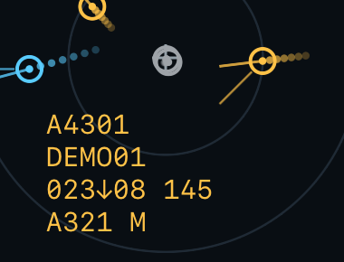
The same layout as a real controller's display. From the top:
A4301 transponder code 4301
DEMO01 callsign (the flight)
023↓08 145 2,300 ft, descending at about 800 ft/min; ground speed 145 kt
A321 M an Airbus A321, wake category medium (H is heavy)
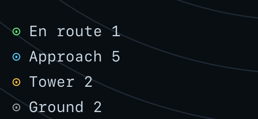
Colour follows the phase of flight: En route (above 6,000 m), Approach (arriving and departing), Tower (taking off and landing, below 900 m) and Ground. The number is how many of each. Tap a row of the legend to hide that kind, leaving, say, only the aircraft landing and taking off.
Drag and pinch as on a map, or use + / −. The rings stay centred on your receiver. The arrow returns to your own position; auto range picks a range that holds every aircraft. The figure at the bottom right is the range, and how many aircraft are off the screen.
Tapping an aircraft
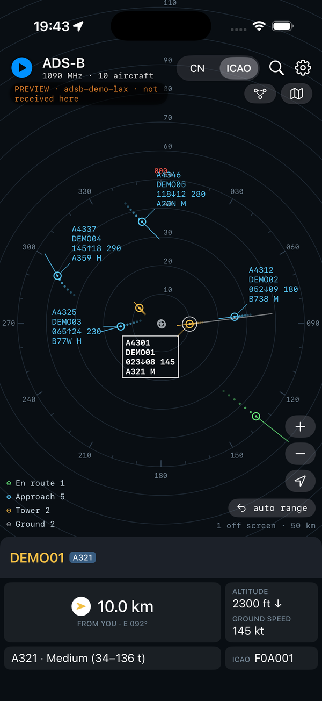
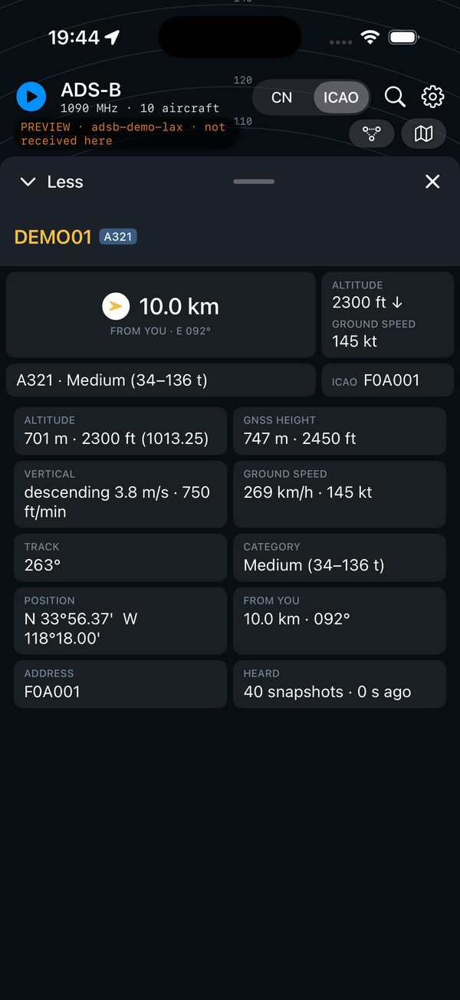
The card has what is looked at most: how far and which way from you, altitude, speed, type. Pulled open it adds pressure and satellite altitude, vertical rate, track, position, the 24-bit address and how many messages were received. With a network connection it also looks up the registration, the airline, the origin and destination, and a photograph of the aircraft (the demonstration aircraft are invented, so there are none here).
The chart over the scope
Once an airspace data file is imported, the layers button at the top right puts the chart over the scope a layer at a time. Everything at once is crowded, as the first picture shows; turn on what you want to look at. Each picture below has one layer on.
Departures (SID)
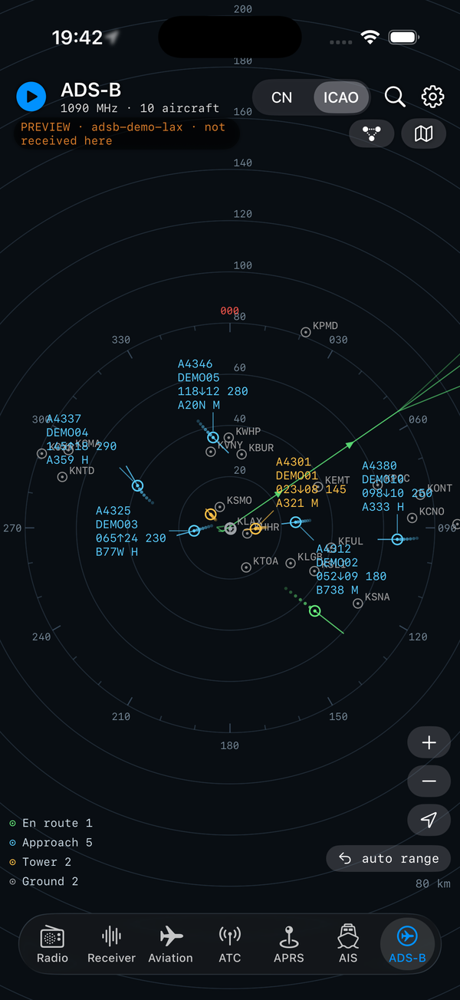
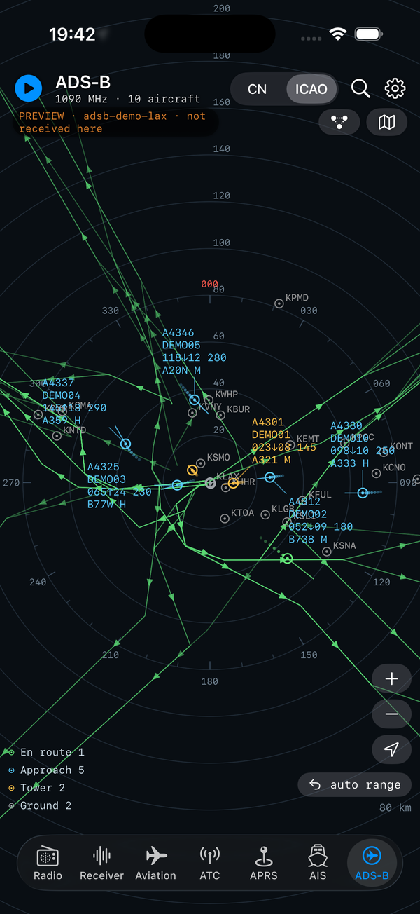
The green lines are departures and the arrowheads show the direction flown. An aircraft does not go where it likes after take-off: it climbs, turns and joins the airways along these fixed routes. With this layer on you see one departure after another on the same line.
- Layers menu → Procedures → turn on Departures (SID).
- Airport: draw one airport's procedures only. There are twenty airports round Los Angeles, and all of them together is a tangle.
- Runways: the direction in use. The default is Auto: the app judges it from the aircraft landing and taking off and draws only that direction.
- Procedure: draw just the one chosen, to see exactly what a particular aircraft is flying.
Arrivals (STAR)
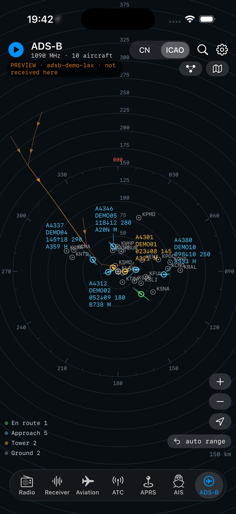
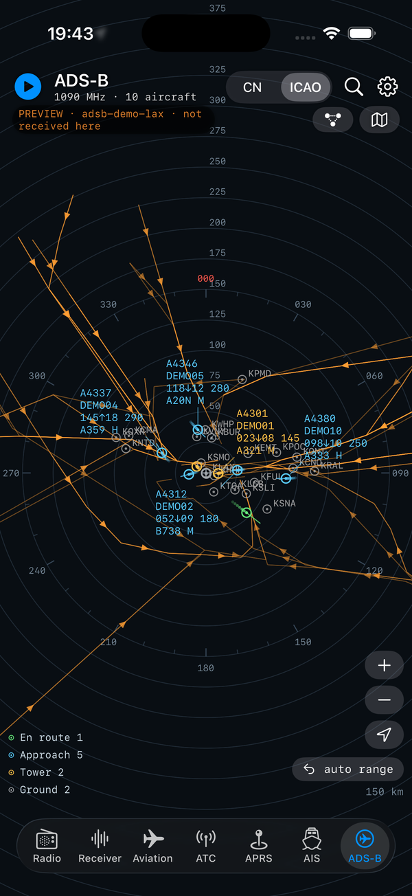
The orange lines are arrivals: aircraft leaving the cruise descend and slow along them and form a single file near the airport. A range of 150 km shows it best, with distant aircraft joining the same line one by one.
Approaches and holds
The menu also has Approaches and missed and Holds: the approach is the last part, lined up with the runway; the missed approach is the way out when a landing is abandoned; a hold is the racetrack an aircraft flies while it waits. They are drawn only when your data file has them. The Los Angeles example has departures and arrivals only, so there is no picture here.
Airways
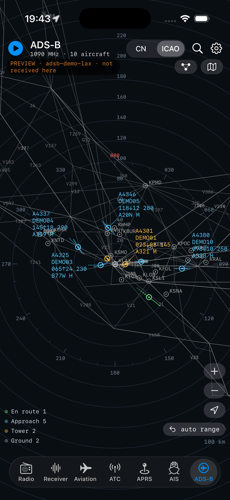
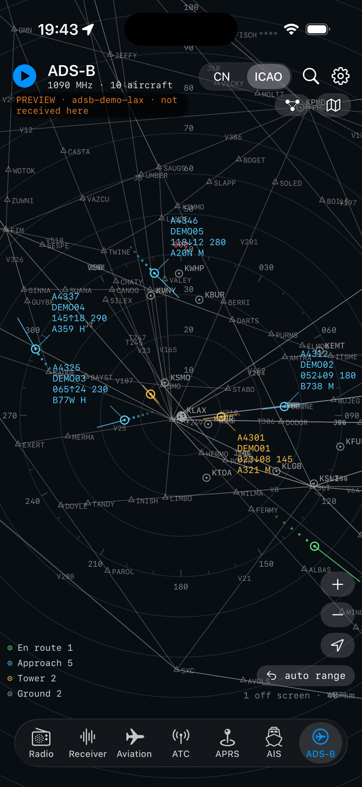
The thin grey lines are airways, the motorways of the sky, each with its designator beside it (V25, J5). The Waypoints layer names the five-letter points along them. Aircraft passing overhead without landing here are nearly all on one airway or another.
- Layers menu → Layers → Airways, Waypoints.
Radio navigation aids
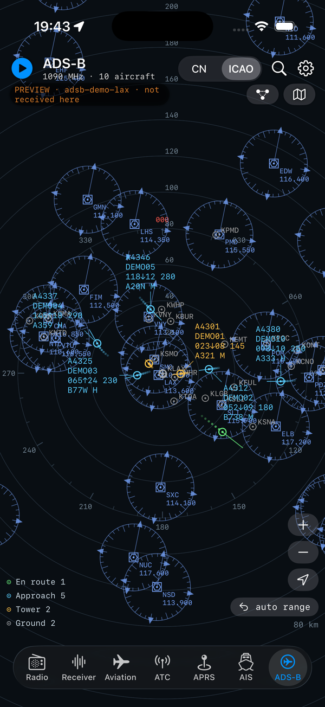
The Navaids layer draws the radio beacons on the ground. One with a ring of marks is a VOR, by which an aircraft finds its bearing from the station; beside it are a three-letter identifier and a frequency (LAX 113.600). Many airways and procedures run from one navaid to the next. The Airports layer marks the other airports in range.
The map

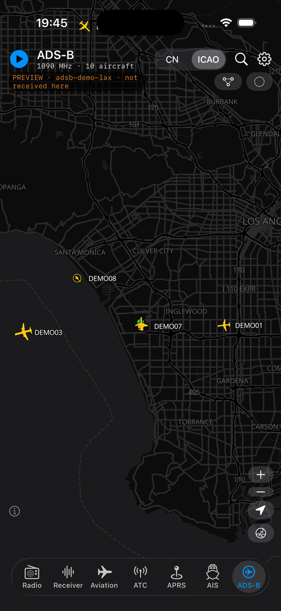
The map button at the top right puts the same aircraft on a map: each symbol points the way the aircraft is heading, with its callsign beside it. The map and the scope share their position and zoom, so switching shows the same place. The buttons at the bottom right change between satellite and street map, and roads can be laid over the imagery. The map needs a network connection.
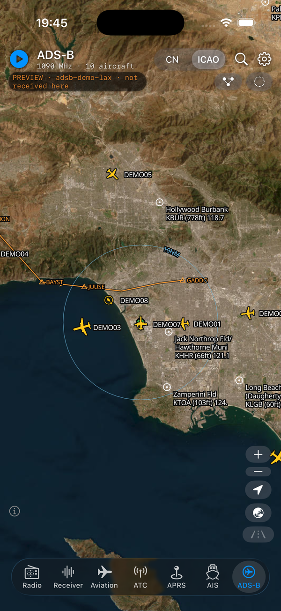
Every layer the scope has, the map has. A procedure over imagery explains itself: which ridge it crosses, where it reaches the sea, and how it turns to line up.
The same two procedures over satellite imagery, at the same place:
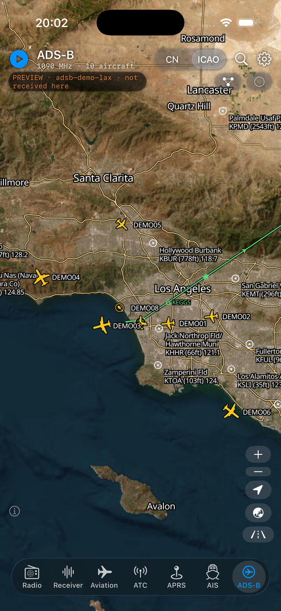
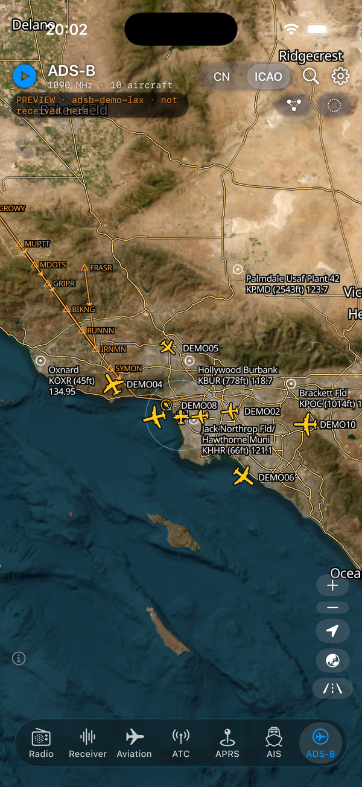
On the ground: runways, taxiways and gates
Zoom the map in to an airport and another layer appears: runways, taxiways and gates.
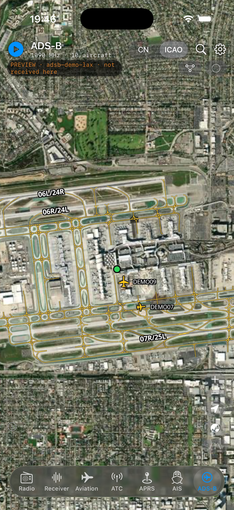
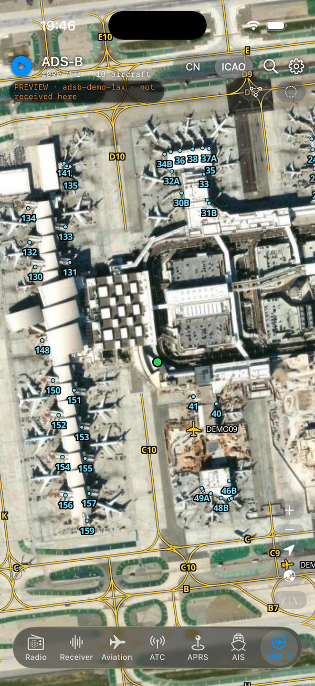
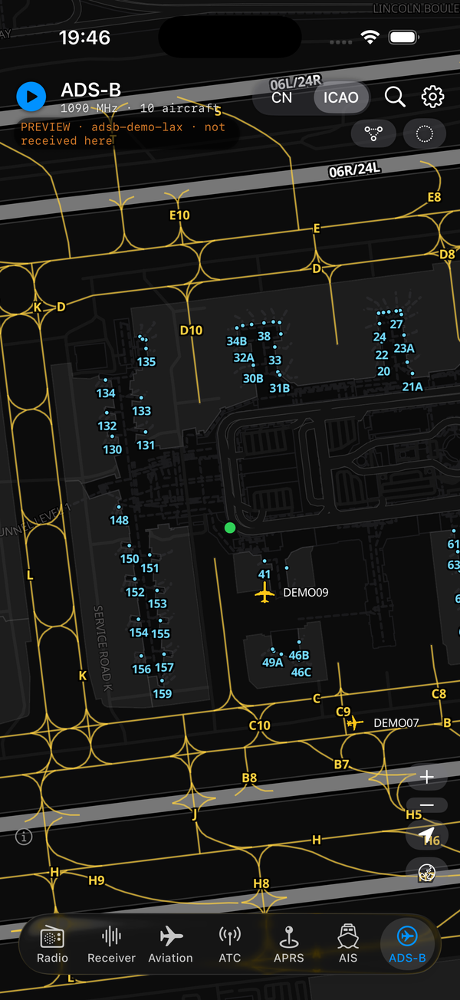
- Yellow lines are taxiways, and the letters beside them (C, B, D10) are their names, the ones ground control says on the frequency.
- Wide grey bands are runways, numbered at each end (06R/24L, 07L/25R).
- Blue numbers are gates and stands (41, 130, 148…).
- Aircraft on the ground have positions too: you can see which gate one is parked at, or which taxiway it is following to the runway.
The scope has the same, once zoomed to within a few kilometres:
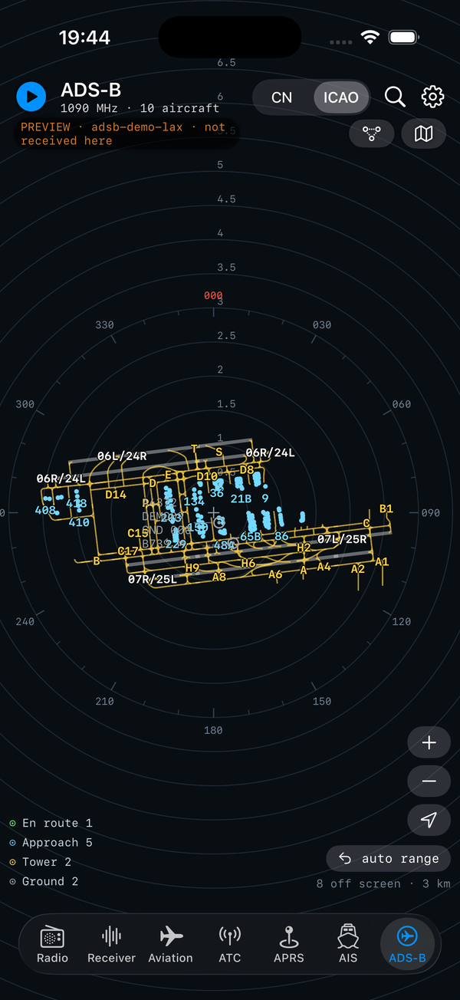
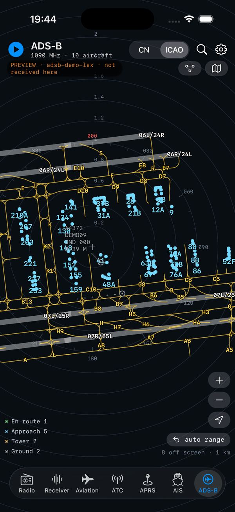
- Layers menu → Airport ground has three switches: Runways and taxiways, Taxiway names, Gates.
- This layer comes from OpenStreetMap and needs no data file. Most airports in the world are covered, and the first look at an airport needs a network connection.
Terrain contours
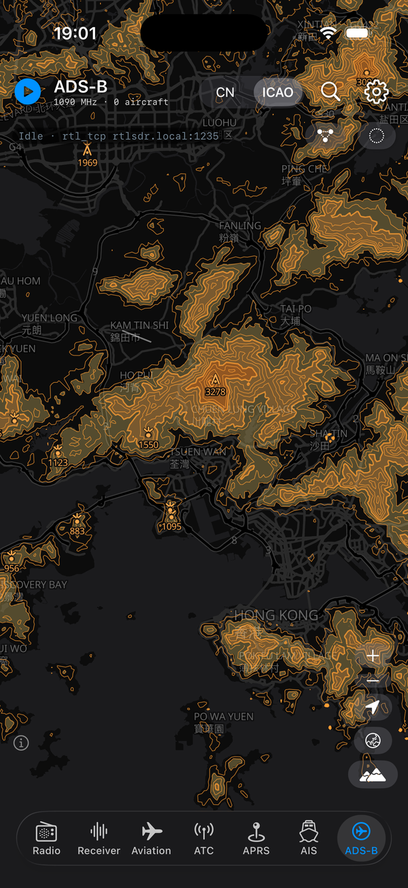
The mountain button at the map's lower right draws the terrain: orange contour lines over a layered tint, darker with height, the way a paper chart draws high ground. Why an approach into hilly country turns where it does, and why it holds so high, becomes plain.
- Contours get closer as you zoom in: every 500 ft from afar, then 250 ft and 100 ft. The unit follows CN / ICAO at the top; CN uses metres (200, 100, 50 m).
- The tint is measured from the nearby airports' elevation, in steps of height above it (ICAO: 500, 1000, 2000, 3000, 5000 ft…; CN: 150, 300, 600, 1000, 1500 m…), the way an approach chart draws terrain. A plateau's plain (Hohhot, the Lhasa valley) stays clear and only what rises above the airports is tinted. Contours are still labelled above sea level.
- The radar scope has it too, on the same button. The scope loads no map, only the terrain, which is the clearest way to see the hills against the procedures.
- The departure map on the aviation data link page and the APRS map (with its Track tab) have the same switch.
- Heights are AWS's public Terrain Tiles (SRTM, GMTED2010, ETOPO1), worldwide. The first look at a place needs a network connection; after that it is cached. Accuracy is about 30 m, the data's own — this is not a chart and not for navigation.
Obstacles
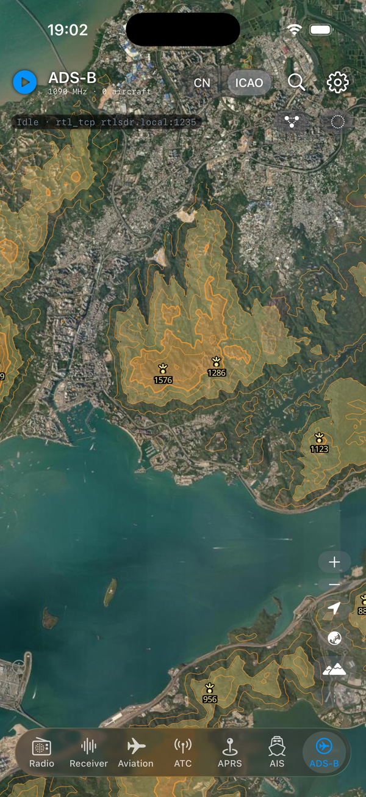
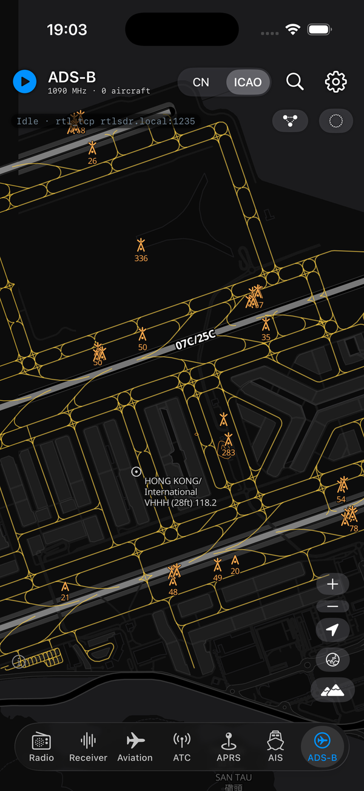
An imported AIP lists each airport's obstacles (AD 2.10): the buildings, masts, stacks and hills around it, with their elevations. Chart layers → Layers → Obstacles draws them with the chart's own symbols:
- An inverted V with a dot is one obstacle (a building, tower, mast, stack or wind turbine); two are a group (power lines, a block of buildings); rays over it mean it is lit; a dot alone is a peak's spot height.
- The figure under it is the elevation above sea level, in the CN / ICAO unit, rounded up as a chart rounds it. Where two would overlap, the higher keeps its figure.
- Orange on the dark map, pale yellow on a dark outline over satellite imagery.
- They appear from about zoom 10; those under 100 m above sea level (an airport's anemometers and aerials) only closer in. On the scope they are drawn within 30 km, the low ones within 10 km.
Publications that carry obstacles so far:
- AIP Hong Kong, China: the 60 obstacles on Hong Kong airport and the 9 peaks carrying obstruction lights, at their published co-ordinates.
- AIP China: about 6,900 at 82 airports. AIP China gives no co-ordinates, only a magnetic bearing and a distance from the aerodrome reference point or a runway's middle; the app places them with the variation the airport itself publishes. Checked against terrain data, eight in ten peaks land within 50 m of the ground's real height.
- AIP Korea: about 400 at 18 airports, at their published co-ordinates.
- AIP Taiwan, China: about 220 in the approach and take-off areas of 15 airports.
- AIP Malaysia: about 800. Rows whose position or elevation is given as NIL ("a high concentration of tall trees") are not drawn.
Where several airports list the same obstacle — Shanghai's Hongqiao and Pudong both list Lujiazui's towers, Shenzhen lists Hong Kong's hills — it is drawn once, at the position worked out from the nearer airport.
Import once more. An AIP imported before 2026-11-24 carries no obstacles: import the same file (or address) again on the AIP data page; see Importing an AIP.
Things to watch
- An arrival, start to finish. Turn on arrivals, set the range to 150 km, pick an aircraft descending, and watch it come down the procedure point by point and line up with the runway.
- Which way the airport is working today. The runway direction follows the wind. Leave Runways on Auto and the procedures change to the set in use.
- Watch and listen. When an aircraft is on final, go to the tower frequency on the ATC page and hear it cleared to land; then the ground frequency, and follow it by the taxiway names on the map to its gate.
- Spotting. Open the card for the type and registration. A large airport sees unusual types and liveries every day.
- Overflights. Turn on airways and see which one a cruising aircraft is on, and where it is going.
Common situations
| What you see | Why, and what to do |
|---|---|
| No aircraft at all | Most often the antenna. 1090 MHz wants a short antenna with a view of the sky, and deep indoors almost nothing arrives. Check too that the receiver is connected (see Connecting a receiver). |
| Only very near aircraft | Put the antenna outside the window or higher. Range is mostly how far the antenna can see to the horizon. |
| A label but no position | Some aircraft send altitude and code but no position; or it has only just been heard and the position has not arrived yet. |
| A chart layer is on and nothing is drawn | No data file has been imported; see Airspace data file. The airport ground layer does not depend on it. |
| Procedures are on and nothing is drawn | Check that Airport is the one you mean. With Runways set to one direction only that direction is drawn; try All. |
| No taxiways or gates | Zoom to the airport (within about 6 km on the scope); the first look needs a network connection; check the switches under Airport ground. |
| Obstacles is on and none appear | Zoom in to an airport (zoom 10 or closer). The data must come from an AIP imported on or after 2026-11-24; import an older one again. The US and Singapore publications carry no obstacles yet. |
| Terrain appears a piece at a time | Normal. Heights are downloaded as needed; the first look at a place needs a network connection, and what has been seen is cached. |
| On the map, the chart arrives a moment late | Normal. The base map comes first and the chart follows, under a Loading chart… notice. |
| No registration or route | Those come from public databases on the internet, not from the aircraft, and not every aircraft is in them. |